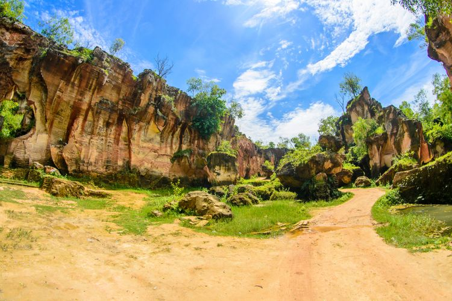
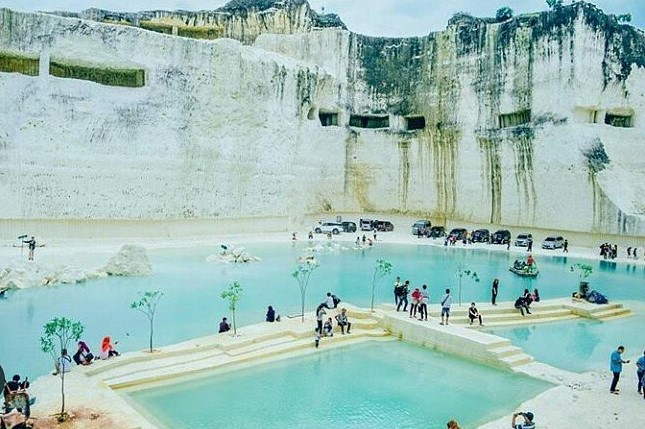
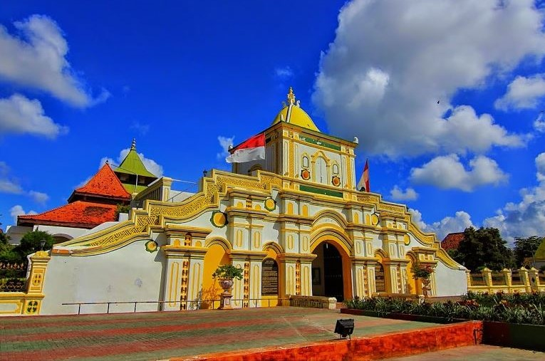
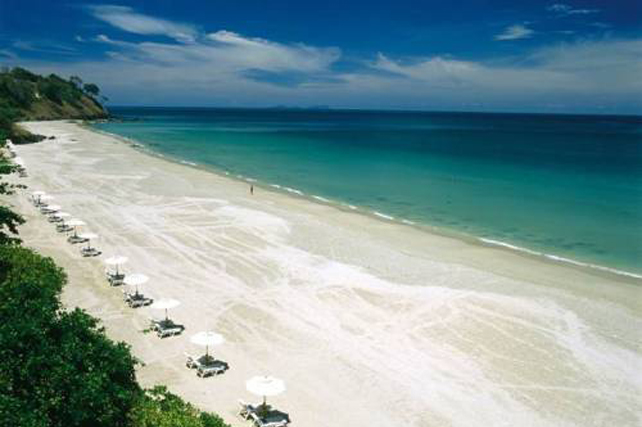

Terletak di Sampang, dengan aliran air yang deras,
dikelilingi hutan hijau yang rimbun, menjadikannya tempat sempurna untuk menikmati
keindahan alam dan bersantai.

Bukit Kapur Arosbaya
Bertempat di Bangkalan, bukit ini menyuguhkan
pemandangan spektakuler dengan formasi batu kapur yang unik, menjadikannya tempat yang
sempurna untuk eksplorasi dan fotografi.

Wisata Bukit Jaddih
Berada di Bangkalan, formasi batu kapur yang
dramatis menciptakan pemandangan menakjubkan, sempurna untuk berfoto dan menjelajahi
keajaiban alam.

Masjid Agung Jamik Sumenep
Berlokasi di Sumenep, masjid ini menawarkan
pengalaman kedamaian di lahir dan batin, simbol arsitektur megah yang mengundang setiap jiwa
untuk merenung dan
terinspirasi.

Wisata Pantai Lombang
Bertengger di Sumenep, pantai ini memanjakan
pengunjung dengan pasir putih dan air laut yang jernih, menciptakan tempat yang sempurna
untuk
bersantai dan menikmati keindahan alam.
Wisata Puncak Ratu Pamekasan
Terletak di Pamekasan, wisata ini menawarkan
panorama alam yang memukau, di mana setiap sudutnya menggambarkan keindahan pegunungan yang
menenangkan jiwa.